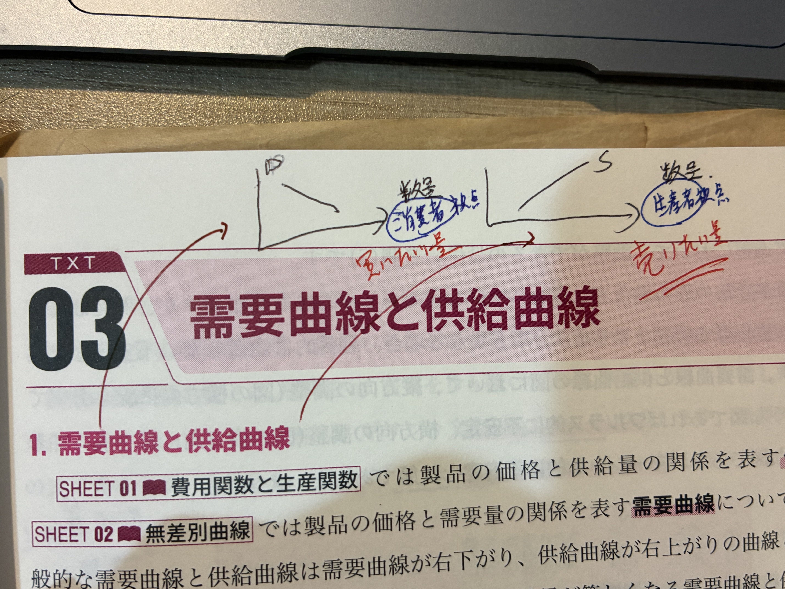
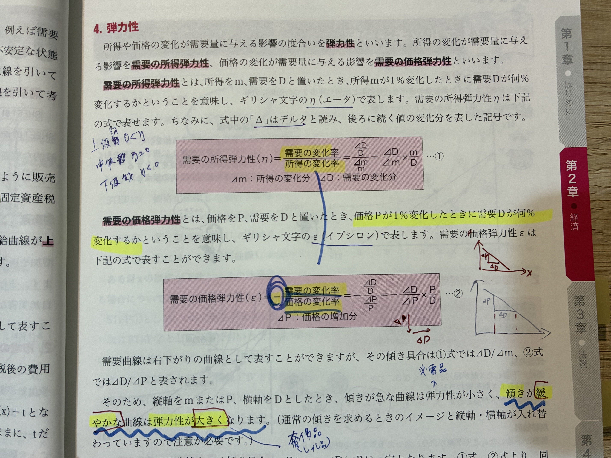

| η | 分類 |
|---|---|
| η > 0 | 上級財 |
| η = 0 | 中立財 |
| η < 0 | 下級財 |

同じ需要量Dでも、需要曲線の 傾き によって弾力性が変わる。
縦軸（P）と横軸（D）の取り方に注意：通常の需要曲線は 縦P・横D なので、傾き ΔP/ΔD を使うときは逆数になる。
| 傾き | 弾力性 | 典型例 |
|---|---|---|
| 急（垂直に近い） | 小（非弾力的） | 必需品（米、塩、医薬品） |
| 緩い（水平に近い） | 大（弾力的） | 奢侈品、代替財が多い財 |
供給の価格弾力性 ε_s ＝ (ΔS/S) / (ΔP/P)。価格1%上昇で供給量が何%増えるか。